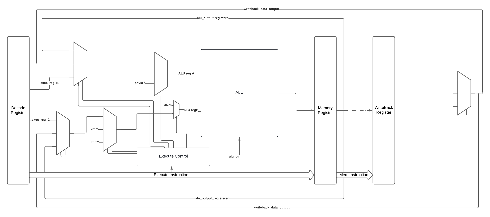
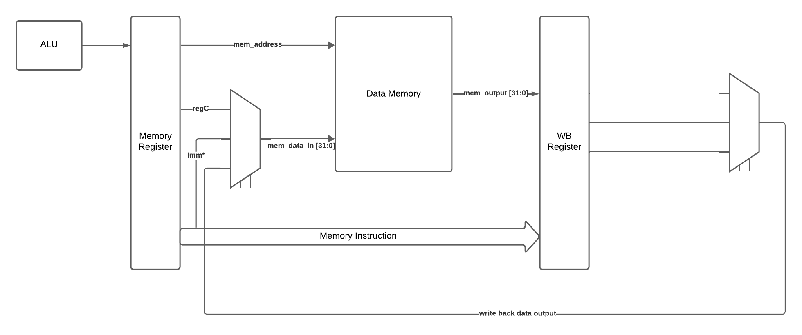
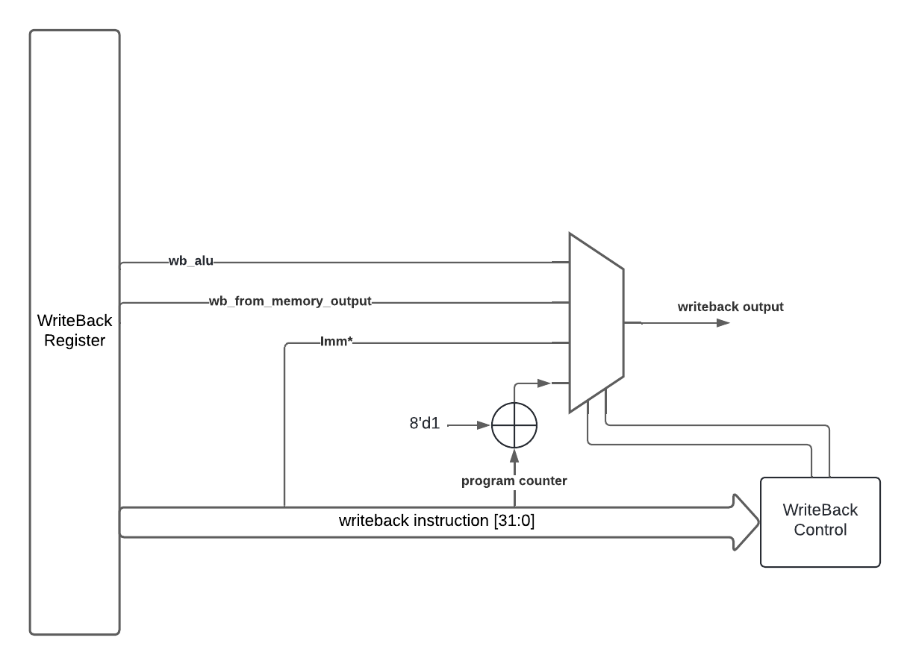

Important aspects of every stage.
Fetch stage keeps the instruction memory inside and distribute it throughout the pipeline. It has a pc_bias port which makes it possible to load a program counter value, and it also counts with an pc_en, which allows the following instruction when rising clock edge comes.
In the diagram it is detailed that flow control instructions, which are capable of taking control of the following instruction, are detected and resolved in Execute stage.

Execute stage mostly computes operations whenever its needed. Usually its inputs are driven from decode stage, but in movement or flow control operations, Imm, Imm *, zeros, and forwarding inputs need to be included. 
Memory stage is simple. When data memory needs to be written its input can either come from C register (store instruction) or from the Imm* extension register (storei instruction). So, input MUX decides whether to choose regC which goes throughout the pipeline, Imm* which can be selected from the current instruction, or in the special case (forwarding) where the previous instruction intended to write C register, then it can come frome the WriteBack Stage. On the other hand, mem_address which is used for writing and reading instructions, and it always comes from alu output. 
Write back output changes in the following way:


‚îî‚îÄ‚îÄ üìÅmulticycle
└── top_multicycle.v
└── defines.v
└── alu_multicycle.v
└── memory.v
└── mem.hex
└── program_counter_multi.v
└── pc_mem_RANDOM.hex
└── pc_mem_TARGET.hex
└── pc_mem_target_multi.hex
└── register_file_multi.v
└── register_mem.hex
└── register_mem_aux.hex
Top Module:
module top_multicycle #(
parameter MEMORY_FILE = "mem.hex",
parameter PC_FILE = "pc_mem_target_multi.hex",
parameter REG_FILE = "register_mem.hex"
)
(
input wire clk,
input wire rst_n,
//Debugging signals!
//.
//.
);
Alu Module:
module alu_multicycle
#(
parameter NB_REGISTERS = 34,
parameter DATA_WIDTH = 32
)
(
input wire [2:0] i_alu_ctrl, //Controls the operation of alu
input wire [NB_REGISTERS-1:0] i_data_A, //ALU in A
input wire [NB_REGISTERS-1:0] i_data_B, //ALU in B
output wire [NB_REGISTERS-1:0] o_data //ALU out
);
the possible operations that ALU can do are:
parameter ADD = 3'd0;
parameter SUB = 3'd1;
parameter ADDC = 3'd2;
parameter SUBC = 3'd3;
parameter ALU_OR = 3'd4;
parameter ALU_AND = 3'd5;
parameter ALU_INV = 3'd6;
parameter EXCEPTION = 3'd7;
Memory Module:
module memory
#(
parameter MEM_WIDTH = 8,
parameter DATA_WIDTH = 32,
parameter ADDR_WIDTH = 8,
parameter MEM_INIT_FILE = "mem.hex"
)
(
input wire clk,
input wire rst_n, //disabled
//Input writing data
input wire i_wenable, //write enable
input wire [0:ADDR_WIDTH-1] i_address, //write address
input wire [0:DATA_WIDTH-1] i_data, //write data
//Outputs
output wire [0:DATA_WIDTH-1] o_data //mem output
);
Register File Module:
module register_file_multi
#(
parameter REG_WIDTH = 34,
parameter ADDR_WIDTH = 5,
parameter MEM_INIT_FILE = "register_mem.hex"
)
(
input wire clk,
input wire rst_n,
//Inputs:
//REGISTER A
input wire [ADDR_WIDTH-1:0] i_address_reg_a, //address A
input wire i_wenable_reg_a, //write enable A
input wire [REG_WIDTH-1:0] i_writedata_reg_a, //reg A write data
//REGISTER B AND C
input wire [ADDR_WIDTH-1:0] i_address_reg_b, //address B
input wire [ADDR_WIDTH-1:0] i_address_reg_c, //address C
//OUTPUTS
output wire [REG_WIDTH-1:0] o_data_regb, //register B
output wire [REG_WIDTH-1:0] o_data_regc //register C
);
Program Counter Module:
module program_counter_multi #(
parameter MEM_INIT_FILE = "pc_mem_target_multi.hex"
)
(
input wire clk,
input wire pc_en, //pc enable
input wire bias_en, //bias enable
input wire [7:0] bias, //load pc
output wire [31:0] instruction_output, //instruction
output wire [7:0] program_counter //pc
);
| Operation | ALU operation | Operand 2 | Operand 3 | Note |
|---|---|---|---|---|
| MOVEMENT | ||||
| load | 0(+) | Rb | Imm* | Mem_addr |
| store | 0(+) | Rb | Imm | Mem_addr |
| loadi | 0(+) | Imm* | WB_output | |
| storei | 0(+) | Rb | Mem_addr | |
| mov | 0(+) | Rb | WB_output | |
| LOGIC | ||||
| or | 4(or) | Rb | Rc | WB_output |
| inv | 6(~) | Rb | Rc | WB_output |
| and | 5(&) | Rb | Rc | WB_output |
| ARITHMETIC | ||||
| add | 0(+) | Rb | Rc | WB_output |
| sub | 1(-) | Rb | Rc | WB_output |
| addC | 2(+c) | Rb | Rc | WB_output |
| subC | 3(-c) | Rb | Rc | WB_output |
| FLOW CONTROL | ||||
| jump | 0(+) | Rb | 0 | |
| bz | 0(+) | Rb | Imm | |
| bnz | 0(+) | Rb | Imm | |
| bc | 0(+) | Rb | Imm | |
| bv | 0(+) | Rb | Imm | |
| jal | 0(+) | Rb | Imm* | |
| jral | 0(+) | Rb | Imm* | |
| ret | 0(+) | Rb | 0 |
The following documentation corresponds to the work done in the target testbench.
| Operation | Operand 1 | Operand 2 | Operand 3 |
|---|---|---|---|
| or | 31 | 0 | 1 |
| inv | 31 | 2 | |
| and | 31 | 4 | 5 |
| add | 31 | 31 | 30 |
| sub | 31 | 28 | 29 |
| addc | 31 | 27 | 26 |
| subc | 31 | 25 | 24 |
| load | 31 | 23 | 22 |
| store | 21 | 20 | 19 |
| loadi | 31 | 63 | |
| storei | 31 | 127 | |
| mov | 31 | 15 | |
| load | 31 | 1 | 2 |
| add | 31 | 31 | 2 |
| loadi | 30 | 30 | |
| jump | 2 | ||
| or | 31 | 0 | 1 |
| or | 31 | 0 | 1 |
| bz | 1 | 0 | 2 |
| or | 31 | 0 | 1 |
| or | 31 | 0 | 1 |
| bnz | 2 | 1 | 2 |
| or | 31 | 0 | 1 |
| or | 31 | 0 | 1 |
| or | 31 | 0 | 1 |
| bc | 1 | 30 | 1 |
| or | 31 | 0 | 1 |
| bv | 1 | 30 | 0 |
| jal | 31 | 3 | |
| or | 31 | 0 | 1 |
| or | 31 | 0 | 1 |
| jral | 31 | 0 | 2 |
| or | 31 | 0 | 1 |
| ret | 18 |
Observe the following:
How hazards are detected?

These are the instructions tested in target_testbench. The whole system, signals and waveforms, instructions, and operations, were followed and checked. The following diagram may help as a road map:

Explanation of some key points about the comparisons executed: